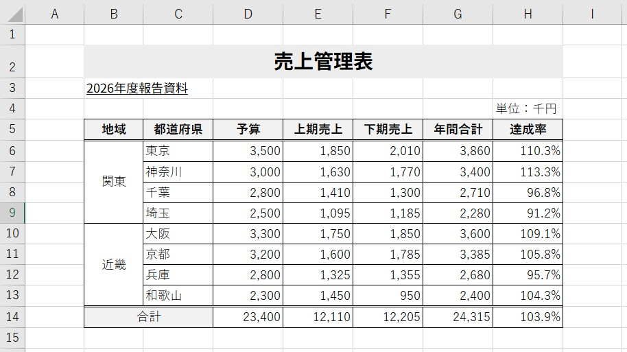
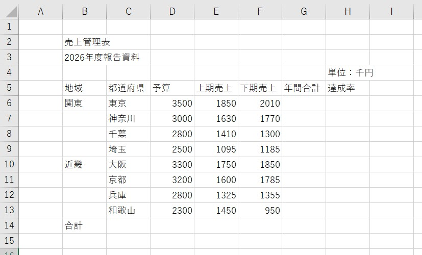
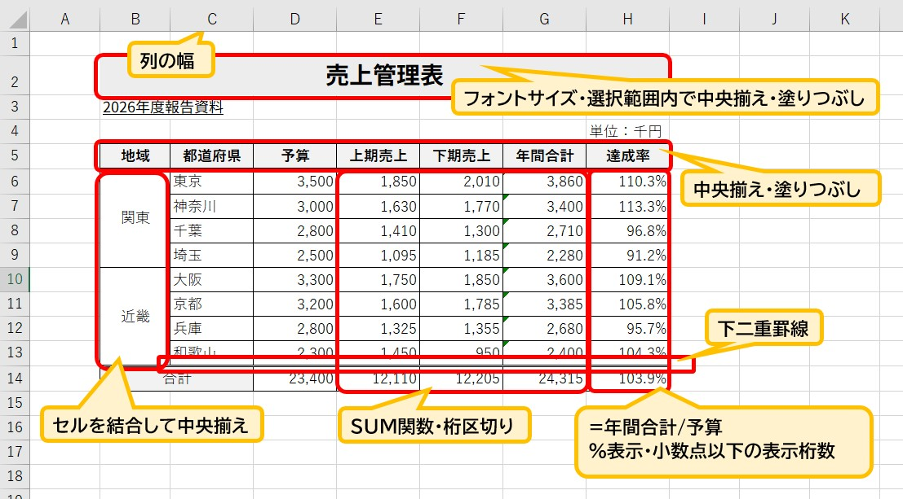

Excelで作る「売上管理表」の整え方
～計算ミスを防ぎ、誰が見ても分かる表にする～
※この記事は、Microsoft 365やExcel 2021など最近のExcelの画面をもとに説明しています。バージョンによって、メニューの名前や位置が少し違う場合があります。
Excelで仕事をしていると、売上や予算などの数字を表にまとめる機会があります。
でも、数字を入力して並べるだけでは、仕事で使いやすい表にはなりません。
今回は、実際の「売上管理表」を作りながら、実務で役立つExcelの使い方を練習しましょう。
・Excelに正確な「計算」をさせる仕組み作り
・SUM関数を効率よく使うための範囲選択術
・達成率の求め方とパーセント表示
・後々の編集を楽にする「セル結合」を使わない配置
1．まずは完成した表を見てみよう
最初に細かい操作を覚える必要はありません。
まずは「最終的にどんな表を作るのか」というゴールを見てみましょう。

▲完成イメージ：計算と装飾が整った表です
今回の表には「地域・都道府県・予算・上期売上・下期売上・年間合計・達成率」が入っています。
最大のポイントは、単に数字を打ち込むのではなく、Excelに計算をさせていることです。
たとえば東京なら、売上の合計（3,860）や予算に対する達成率（110.3％）は、すべてExcelが自動で算出しています。
このような「仕組みのある表」に仕上げていきます。
2．準備：まずはデータを入力する
表を作るときは、いきなり色を付けたり罫線を引いたりしません。
まずは、タイピングに集中して表の「中身（データ）」を用意します。

▲準備したデータ：まずは各セルに正しく入力します
数字は必ず「3500」のように、数字だけを入力しましょう。
「3,500円」のように文字を混ぜてしまうと、Excelが計算できなくなってしまいます。
カンマや単位といった表示は、最後に見た目を整える際に一括で設定するのが効率的です。
入力が終わったら、まず「数字が右に寄っているか」を見る
数字として正しく入力できていれば、Excelは自動的にセルの右側に寄せて表示します。
逆に、数字のはずなのに左に寄っているときは、Excelが「文字」として受け取っているサインです。
この状態のセルは、あとで合計しても計算に入りません。
セルの左上に、小さな緑の三角が出ることもあります。
これは「数値が文字列として保存されています」といった確認マークです。
気づいたら、そのセルを選んだときに出る「！」のマークから、数値への変換ができます。
初心者の方は、入力が終わるとすぐに罫線や色を付けたくなります。
でも、その前に数字の列をまっすぐ見てください。
左に寄っている数字が1つあるだけで、合計がずれる原因になります。
見た目を整える前に中身を整える。
これが、実務で信頼される表の作り方です。
3．今回のポイントを先に確認
表を完成させるために、特に意識してほしい実務上のポイントは4つです。
- 年間合計は計算式で求める：上期売上 ＋ 下期売上 をセル番地で指定します。
- 合計行はSUM関数を使う：電卓は使わず、範囲を選んでオートSUMを使います。
- 達成率を計算する：年間合計 ÷ 予算 で割合を求めます。
- タイトルを安易に結合しない：データの扱いやすさを守るため「選択範囲内で中央」を使います。
4．年間合計は「上期＋下期」
東京の場合、1,850 ＋ 2,010 ＝ 3,860 です。
ここで「3860」と直接キーボードで打ってはいけません。
年間合計のセルに「＝（上期のセル）＋（下期のセル）」という数式を設定しましょう。
こうしておけば、後から売上の数字が変更されても、合計金額が自動的に更新されます。
Excelでは、「答えを打つ」のではなく「答えを出す仕組みを作る」と考えます。
数式を入れたら、必ず「中身」を確認する
数式を入れたセルを選んで F2 キーを押すと、セルの中が編集できる状態になり、数式で使っているセルが色つきの枠で表示されます。
「上期」と「下期」のセルが正しく選ばれているかを、目で確認できます。
確認が終わったら、Esc キーを押せば、何も変えずに元に戻ります。
画面上部の「数式バー」でも、同じ内容を見られます。
1行目の数式ができたら、セルの右下にある小さな■（フィルハンドル）をダブルクリックしてみましょう。
下の行まで一括でコピーされます。
1行ずつ入力し直すより速く、入力ミスも防げます。
5．ここが重要！合計は「まとめて選択」できる
表の下にある「合計」を出す際、1列ずつSUM関数を入れていませんか？
Excelではもっとスマートな方法があります。

▲まとめてSUMやその他の機能を使用した解説：SUMは範囲選択が時短のコツ
今回の表では、合計を出したい範囲（データから空の合計行まで）をまとめて選択し、Σ（オートSUM）ボタンを押します。
すると、上期・下期・年間の3列すべての合計が一瞬で算出されます。
「1列ずつ」から「範囲でまとめて」へ。
この視点を持つだけで、実務のスピードは上がります。
合計が合わないときの確認ポイント
合計を出したのに、電卓で足した数字と合わないことがあります。
そのときは、次の2つを疑ってください。
- 数字が「文字」になっている： 先ほどの、左に寄っている数字です。文字として入力されたセルは、合計に含まれません。
- 合計の範囲がずれている： Σ（オートSUM）を押すと、合計の対象になる範囲が点線の枠で表示されます。Enter を押す前に、その枠が正しい範囲か確認しましょう。途中に空白の行があると、そこで範囲が切れてしまいます。
右下の「年間合計の合計」は、縦に足しても出せますし、「上期の合計」と「下期の合計」を足しても出せます。
2通りで出した数字が一致すれば、計算が正しい可能性が高まります。
一致しなければ、どこかに入力ミスか範囲のずれがあります。
表を作った本人は、「合っているはず」という気持ちで見てしまうため、ミスに気づきにくいものです。
だからこそ、気持ちに頼らず、縦横の検算のような「仕組みでの確認」を習慣にしてください。
仕事では、数字の間違いは信頼に直結します。
6．達成率を求める
達成率は「目標（予算）に対して、どれだけ結果を出せたか」を表します。
計算方法は 達成率 ＝ 年間合計 ÷ 予算 です。
東京なら 3,860 ÷ 3,500 ＝ 1.1028... となります。
これをExcelの機能でパーセント表示（110.3％）に変換します。
数字が100%を超えていれば予算達成、下回っていれば未達成、と一目で判断できるようになります。
達成率でよくある2つの失敗
① 「×100」をしてしまう： 「割合なのだから100をかけるのでは？」と考えて、数式に「×100」を付けてしまう方がいます。
その状態でパーセント表示にすると、「11030%」のような数字が表示されます。
パーセントは、数式ではなく「表示形式」で付けるものです。
数式は「年間合計 ÷ 予算」だけで十分です。
② 「#DIV/0!」が出る： 割る数である予算が、空欄または0のときに表示されるエラーです。
数式が間違っているのではなく、予算の入力漏れが原因であることがほとんどです。
エラーが出たら慌てずに、まず割る数のセルを確認しましょう。
7．数字の表示を整える
計算ができたら、見た目を整えます。
実務で最も大切なのは「読み間違いをさせないこと」です。
- 桁区切り（カンマ）：3500 ではなく「3,500」と表示します。
- 小数点以下の調整：達成率は「110.3%」のように、四捨五入して桁を揃えます。
大切なのは、セルの「中身」は計算できる数字のまま、見やすい仕様に変えるというExcel特有の考え方です。
見た目の数字と、中身の数字は別物
達成率が「110.3%」と表示されていても、セルの中身は1.1028…のままです。
表示形式で小数点以下の桁数を減らしても、見た目が四捨五入されるだけで、計算に使われる値は変わりません。
そのため、画面に表示された数字を電卓で足すと、Excelの合計と1ずれることがあります。
これは間違いではなく、「表示」と「中身」が別だからです。
提出先から「合計が合わない」と言われたときに説明できるよう、この仕組みを知っておきましょう。
8．タイトルはセル結合しなくても中央にできる
表のタイトル「売上管理表」を中央に配置する際、ついつい「セルを結合して中央揃え」を使いがちです。
しかし、安易なセル結合は、後の並べ替えやコピーを困難にする原因になります。
実務では、セルの書式設定にある「選択範囲内で中央」という機能を使うのがおすすめです。
見た目は中央に揃えつつ、セルの構造はバラバラのまま保てるため、非常に「壊れにくい」表になります。
結合を避けたほうがよい理由は、具体的には次の点です。
- 結合したセルを含む表は、並べ替えをしようとすると「すべての結合セルを同じサイズにする必要があります」というエラーになることがあります。
- コピーや貼り付けをしたときに、セルの形が合わず、思わぬ位置にずれることがあります。
- タイトルを入力したセルから、表の幅の分だけ右へセルを範囲選択する（右側のセルは空白にしておく）。
- Ctrl ＋ 1 を押して、「セルの書式設定」を開く。
- 「配置」タブの「横位置」から「選択範囲内で中央」を選び、「OK」を押す。
9．罫線や色を付けて「表」を完成させる
最後に仕上げの装飾を行います。
目的は「派手にすること」ではなく、情報の区切りを明確にすることです。
- 見出しの塗りつぶし：項目名に薄い色を付け、データと区別します。
- 格子の罫線：表全体に細い線を引き、合計行の上には二重線を引いて強調します。
- 配置の調整：文字は中央、数字は右、と揃えることで視線の動きが安定します。
提出する前の5つのチェック
表が完成したら、保存して終わりにせず、次の5点を確認してから相手に渡しましょう。
- 数字の列が、すべて右に寄っているか（文字になっていないか）
- 縦と横で出した合計が、一致しているか
- 達成率の元になる予算が、すべて入っているか
- 「#####」や「#DIV/0!」などのエラー表示が残っていないか
- 印刷プレビューで、表が途中で切れていないか
Excelが正確にやってくれるのは、入力された数字をもとにした計算です。
入力した数字そのものが間違っていても、Excelは教えてくれません。
だから、「計算は任せる、確認は自分でする」。
この役割分担を持つことが、Excelを仕事で使う人の基本姿勢です。
よくある質問
合計が、電卓で足した数字と合いません。
数字が文字になっている、合計の範囲がずれている、表示が四捨五入されている、のいずれかの可能性があります。本文の「合計が合わないときの確認ポイント」と、7章の「見た目の数字と、中身の数字は別物」を確認してください。
セルに「#####」と表示されます。
列の幅が足りなくて、数字が表示しきれていないだけです。列の右側の境目をダブルクリックすると、幅が自動で調整されます。
「#DIV/0!」と表示されました。どうすればいいですか？
割る数が空欄か0になっています。達成率なら、予算のセルに数字が入っているかを確認してください。
まとめ｜Excelは「計算してくれる表」にする
今回の売上管理表を通じて、以下のポイントを指に馴染ませましょう。
- 数字は「数値」として入力する：単位は後から設定するのが鉄則。
- 合計は範囲選択して一気に算出：SUM関数をまとめて設定する時短術。
- 仕組みを作る意識：数値を変えれば合計や達成率が自動で変わる表にする。
- セル結合は慎重に：データの再利用性を考えた配置を選ぶ。
- 作ったあとに確認する：数字の右寄せ、縦横の検算、エラー表示のチェックを習慣にする。
Excelは数字を入力して終わりではありません。
「人が計算する」から「Excelに計算させる」。
この考え方を身につけることが、仕事で信頼されるExcelスキルへの第一歩です。